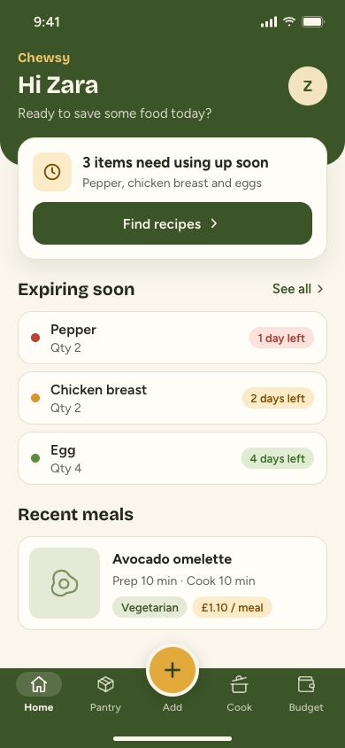
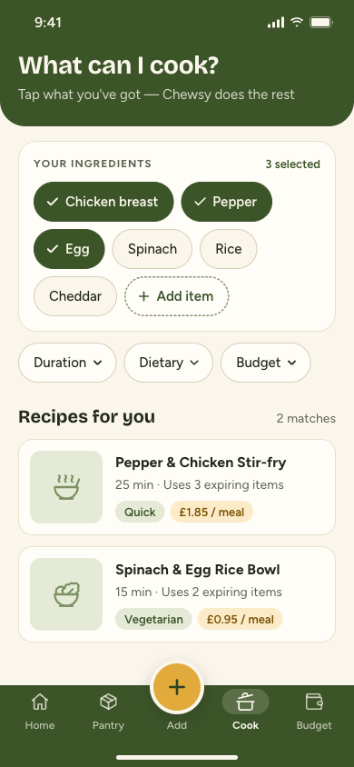
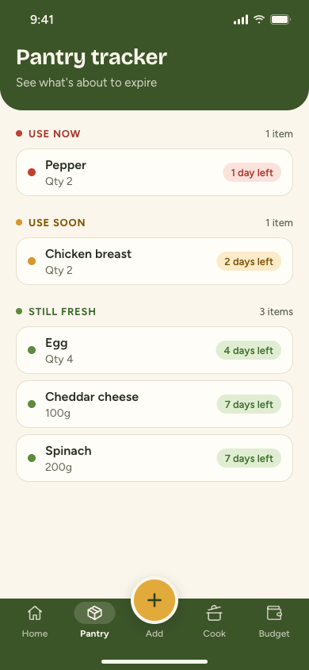
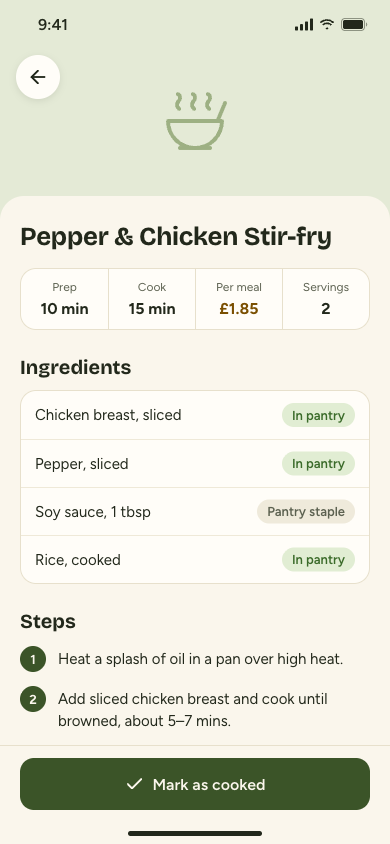

The solution
Cook from your fridge, not a shopping list
Chewsy is built around one idea: use up what you already have before it goes off.
Start from what you have
"What can I cook?" starts with the ingredients already in your kitchen. Tap what you've got, narrow it down by time, diet or budget, and get recipes that use them up. Each result shows how many expiring items it uses and what it costs per meal.

See what's about to go off
The pantry tracker works like the fridge you already manage. Items are sorted by expiry date and colour-coded as use now, use soon or still fresh, so checking what needs eating takes seconds.

Know what's in the pantry, and what it costs
Each recipe tags the ingredients you already have and shows the cost per meal, so you can see at a glance how much you need to buy and how much you'll spend.

The process
How I got there
- 01
Secondary research
Student food waste studies and a look at existing recipe apps
- 02
Empathy and affinity mapping
A persona, an empathy map and five research themes
- 03
Prioritisation
MoSCoW, plus a map of my riskiest assumptions
- 04
Wireframes to high fidelity
Core flows wireframed for the coursework, then polished in Figma
01
Background
Food waste is a growing problem in the UK, and students add to it. In a Food Standards Agency study, around two-thirds of students had food past its use-by date in the fridge, and 64% had left leftovers for more than two days.
The research pointed to a few causes: buying perishables without a plan to use them, not knowing how to cook with random ingredients or leftovers, uncertainty about portions and storage, and busy, unpredictable schedules. Every bit of wasted food is money out of an already tight budget.
02
Existing apps
Popular apps like Mealime and Tasty help people cook, but they're built around full recipes and meal plans that usually mean buying new ingredients. Neither tracks expiry dates, suggests uses for leftovers or budgets with students in mind.
| Feature | Chewsy | Mealime | Tasty |
|---|---|---|---|
| Starts from ingredients you already have | Yes | No | Yes |
| Expiry date tracking | Yes | No | No |
| Ideas for using up leftovers | Yes | No | No |
| Student-focused budgeting | Yes | No | No |
| Simple, low-effort design | Yes | Yes | Yes |
03
Understanding students
I built an empathy map around a persona, Zara, to keep every decision tied to a real kind of student rather than an abstract "user".
Zara is a second-year student in shared accommodation with limited kitchen space. She juggles her studies, a part-time job and a social life, buys groceries without a plan and eats the same meals on repeat. Her fridge is full of random ingredients, and some of them always go off.
Says
- "I don't know what to cook with this stuff."
- "I forgot I had this in the fridge."
- "Takeout is easier."
Does
- Buys groceries without a plan
- Eats the same meals on repeat
- Throws away food that goes off
- Sometimes skips meals
Thinks and feels
- Frustrated at wasting money on spoiled food
- Guilty about the waste
- Good when a meal is cheap and tasty
Hears
- Parents reminding her to save money
- Flatmates suggesting takeaways
- TikTok showing quick recipe ideas
I then grouped the research into five themes with an affinity diagram: meal planning, budgeting, food waste habits, lifestyle and motivation, and gaps in existing apps. Each insight became something the design had to do:
| What the research showed | What the design needs to do |
|---|---|
| Students waste food because they don't plan meals or keep track of expiry dates | Track ingredients and flag food before it goes off |
| Students often don't know what to cook with what they have | Suggest recipes from the ingredients they already own |
| Leftovers get thrown away for lack of ideas | Help turn leftovers into new meals |
| Budget is a constant worry | Show cost per meal and favour affordable recipes |
| Many students are too busy to plan ahead | Be fast and simple, with almost no setup |
04
Defining the goal
How might we help students cook with what's already in the fridge, before it goes off?
Track what's in the kitchen
Keep a simple record of ingredients and flag food before it expires.
Suggest meals from what's there
Recommend recipes based on the ingredients students already own, including leftovers.
Keep costs visible
Show cost per meal and favour budget-friendly recipes.
Stay quick and simple
Fit around busy schedules, with as little setup as possible.
05
Deciding what to build
I prioritised features with MoSCoW, keeping the first version focused on the core problem: using up what you already have before it goes off.
Must have
- Recipe suggestions from the ingredients you enter
- Expiry tracking with reminders
- A leftovers mode
- A simple, mobile-first interface
Should have
- Cost per meal and budgeting tips
- Saved favourite recipes
- Quick filters, like vegetarian or under 15 minutes
- A like or dislike prompt after meals
Could have
- Barcode scanning
- Grocery lists shared with flatmates
- Calendar reminders for planned meals
- Light and dark mode
Won't have (for now)
- Full meal-prep plans like Mealime
- Macro and nutrition tracking
- Smart fridge integration
- Built-in social sharing
The riskiest assumptions. Mapping my assumptions by risk showed the biggest unknowns: will students keep their pantry up to date, will they trust the recipe suggestions, and will they bother typing food in by hand? That's why adding an item takes as few steps as possible, and why a packaging scanner is high on my list of next steps.
06
Design principles
Chewsy follows a fridge-as-inventory mental model. You see what's stored, check its condition and clear out what's expired, just like in your real kitchen, so there's very little to learn. Three usability principles shaped the details:
Match the real world
Ingredient tracking and expiry follow how people already manage their fridge.
Keep it minimal
Clean layouts, short labels, and colour and icons that carry meaning, so nothing feels cluttered.
Prevent errors
Dropdowns for quantity units and automatic sorting by expiry stop mistakes before they happen.
The interface also cuts down mental effort by sorting and suggesting for you. It keeps people motivated by showing what's expiring alongside savings and suggestions. And it stays flexible, so you can type items in or pick from suggestions.
07
From wireframes to high fidelity
For the coursework, I wireframed the four core screens: Home, "What can I cook?", Pantry tracker and Recipe. Navigation and task flows were kept to as few steps as possible.
Chewsy wireframes.
Home leads with urgency
It opens with how many items need using up soon, before anything else.
Results show their value
Each recipe shows how many expiring items it uses and its cost per meal.
A new recipe screen
Ingredients you already have are tagged "In pantry", with short, numbered steps.
A calm visual style
A deeper green, consistent line icons and clearer days-left labels.
08
Testing and next steps
The coursework deadline came before I could run usability testing. After handing it in, I ran short, informal sessions with a few students on the "What can I cook?" flow and the pantry tracker. I checked whether picking ingredients was obvious without explanation and whether the expiry colours made sense without the legend. I didn't record those sessions, so I'm not reporting results from them.
The biggest lesson was how much structured user-centred design methods kept the project focused. The empathy map, affinity diagram and prioritisation made it just as clear what to leave out as what to build.
Run structured testing
Set tasks with clear success criteria, aimed at the riskiest assumptions.
Finish the budget tracker
It's part of the plan but wasn't fully designed.
Add a packaging scanner
Read the item name, quantity and expiry date from a photo, so adding food takes seconds.
Build a shared pantry
Let flatmates manage one pantry together to cut duplicate buying.